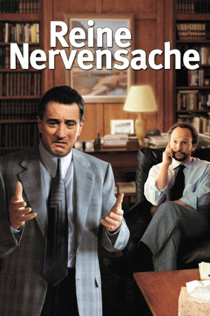
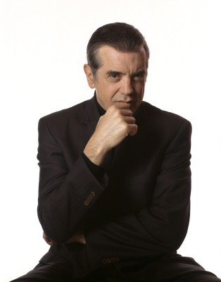
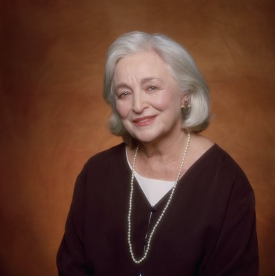
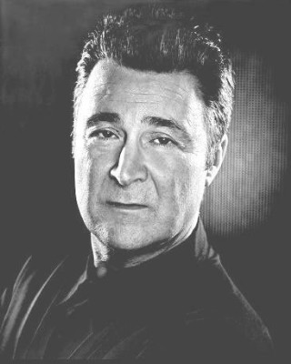
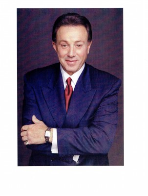

#1342 Reine Nervensache
Alternativ: Analyze This
 
 IMDB-Wertung: 6.7 / 10
IMDB-Wertung: 6.7 / 10  Metascore: 61
Metascore: 61 
Ein Gangster dreht fast durch. Sein Seelenklempner fürchtet, dass man ihn deswegen durch den Wolf dreht. Welchen psychiatrischen Rat gibt man einem Typen, der seine Probleme mit blauen Bohnen und Zement löst? In dieser irren Mafia-Parodie nimmt De Niro als mächtiger, aber unsicherer Unterweltboss gekonnt seine vielen Gangsterrollen auf die Schippe. Crystal spielt seinen Psychotherapeuten, dem nur wenige Tage bleiben, um die emotionale Krise des Mafiosos in den Griff zu bekommen und ihn wieder in einen glücklichen, angepassten Gangster zu verwandeln.
Jahr: 1999
Dauer: 103 Minuten
FSK: 12
Land: USA Studio: Warner Bros.Tonspuren:
Untertitel:
Auflösung: 720p (1280x720) Größe: 4474 MB
Genre: Komödie, Krimi
Regisseur:  Harold Ramis
Harold Ramis
Drehbuch: Kenneth Lonergan, Peter Tolan, Peter Tolan, Harold Ramis, Kenneth Lonergan
Soundtrack: Howard Shore
Darsteller:
 Robert De Niro als Paul Vitti
Robert De Niro als Paul Vitti Billy Crystal als Dr. Ben Sobel
Billy Crystal als Dr. Ben Sobel Lisa Kudrow als Laura MacNamara Sobel
Lisa Kudrow als Laura MacNamara Sobel-  Chazz Palminteri als Primo Sidone
 Kresh Novakovic als '50s Gangster
Kresh Novakovic als '50s Gangster- Bart Tangredi als Young Vitti Sr.
- Michael Straka als Young Dominic Manetta
 Joe Viterelli als Jelly
Joe Viterelli als Jelly Molly Shannon als Caroline
Molly Shannon als Caroline Max Casella als Nicky Shivers
Max Casella als Nicky Shivers Bill Macy als Dr. Isaac Sobel
Bill Macy als Dr. Isaac Sobel-  Rebecca Schull als Dorothy Sobel
- Pat Cooper als Salvatore Masiello
-  Leo Rossi als Carlo Mangano
 Aasif Mandvi als Dr. Shulman
Aasif Mandvi als Dr. Shulman-  Tony Darrow als Moony
- Donnamarie Recco als Sheila
- Vince Cecere als Tino
 William Hill als FBI Agent Provano
William Hill als FBI Agent Provano- Elizabeth Bracco als Marie Vitti
- Daniel W. Barringer als Dream Sequence Gunman
 John Polce als Dream Sequence Gunman
John Polce als Dream Sequence Gunman- Michael Harkins als Paretti's Family
- Paula Raflo als Paretti's Family
- Matthew Vega als Paretti's Family
- Tony Ray Rossi als Potatoes
 Tony Bennett als Himself
Tony Bennett als Himself Kenny Alfonso als Car Chase Driver , uncredited
Kenny Alfonso als Car Chase Driver , uncredited- Anthony Caso als Johnny Angel , uncredited
- Richard D'Alessandro als Gangster , uncredited
- Trish Dempsey als Hotel Guest , uncredited
 Tony Devon als Bobby Angel , uncredited
Tony Devon als Bobby Angel , uncredited- Michael Rothberger als Soldier , uncredited
- Joseph Rigano als Dominic Manetta
- Richard C. Castellano als Jimmy Boots
- Frank Pietrangolare als Tuna
- Kyle Sabihy als Michael Sobel
- Neil Pepe als Carl
- Michael Haley als Producer
- Ian Marioles als Soundman
 Jimmie Ray Weeks als FBI Agent Steadman
Jimmie Ray Weeks als FBI Agent Steadman- Bob Cea als FBI Agent Ricci
- Ira Wheeler als Scott MacNamara
- Luce Ennis als Belinda MacNamara
- Gina Gallagher als Theresa Vitti
- Francesca Mari als Anna Vitti
- Vinny Vella Jr. als Anthony Vitti
- Mickey Bruno als Miami Soldier
- Dave Corey als Miami Hall Guard
- Fred Workman als Justice of the Peace
Datei: X:\2-Dilogie(N-Z)\Reine Nervensache\Reine Nervensache (1999, FSK12, 1280x720).mkv seit 24.06.2015
Festplatte: HD Collection-2(A-Z)-3(A-M)
 Alle Filme aus Gruppe '2-Dilogie(N-Z)\Reine Nervensache'
Alle Filme aus Gruppe '2-Dilogie(N-Z)\Reine Nervensache'